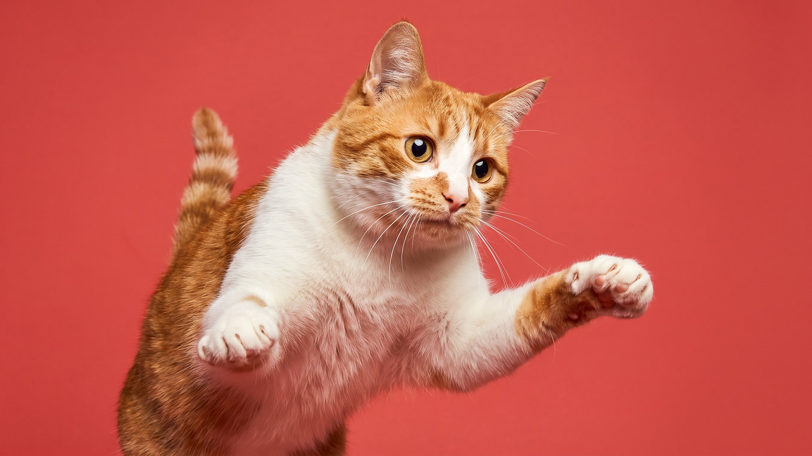

Включили отопление, и в квартире стало суше, чем в летней степи. Кошки на это реагируют: шерсть теряет блеск, кожа чешется, животное пьёт ещё меньше, чем обычно. Ниже разберём, что именно меняется с приходом отопительного сезона и как подстроить уход под эти условия прямо сейчас.
🐾 Чтобы уход не держать в голове
AnimaLife напомнит, когда стричь когти, вычёсывать, купать и обрабатывать от паразитов, и заведёт дневник по вашему питомцу. Бесплатно.
Настроить напоминания → Настроить в MAX →
У вас iPhone? AnimaLife есть в App Store
В отапливаемой квартире влажность воздуха падает до 20–30% при норме 45–60%. Для кошки это означает: кожа сохнет, шерсть ломается и электризуется, слизистые пересыхают. Животное меньше пьёт само по себе, а при сухом воздухе потребность в жидкости растёт.
Увлажнитель воздуха в комнате, где кошка проводит большую часть времени, закрывает проблему. Если увлажнителя нет: мокрые полотенца на батарее дают временный эффект. Это не замена прибора, но лучше, чем ничего.
Вода. Кошки плохо пьют из неподвижной миски: инстинкт говорит им, что стоячая вода может быть небезопасной. Поставьте миску подальше от миски с едой, кошки часто пьют охотнее, когда вода не рядом с кормом. Питьевой фонтанчик решает вопрос лучше всего: движущаяся вода привлекает. Добавьте влажный корм в рацион или увеличьте его долю: это простой способ поднять суточное потребление жидкости.
Кошки любят тепло и охотно устраиваются прямо на батарее или вплотную к ней. Поверхность горячей батареи может достигать 70–80 градусов. Долгий контакт грозит ожогом кожи, особенно если кошка заснула и не чувствует нарастающего жара.
Прикройте батарею плотной тканью или деревянным экраном, чтобы убрать прямой контакт. Рядом поставьте лежанку: тёплое место будет, но на безопасном расстоянии. Лежанка с бортиками хорошо держит тепло сама по себе и становится предпочтительным местом. Холодный подоконник, наоборот, лучше застелить: сквозняк у стекла зимой ощутимый.
Тепло от батарей запускает у кошки линьку вне сезона. Шерсть обновляется активнее, и без регулярного вычёсывания она забивается в желудок при груминге. Это вызывает срыгивание шерстяных комков, а при большом количестве шерсти в желудке может мешать нормальному пищеварению.
Как часто вычёсывать: короткошёрстным кошкам хватает 1–2 раза в неделю резиновой рукавицей или щёткой-пуходёркой. Длинношёрстным нужно ежедневно, особенно в области живота и за ушами, где шерсть сбивается в колтуны быстрее всего.
Статика зимой усиливается: кошку бьёт током при прикосновении, она раздражается и начинает избегать рук. Увлажнитель воздуха снижает статику заметно. Дополнительно помогает специальный антистатический спрей для шерсти животных: наносить на расчёску, а не на кошку напрямую.
Зимой домашняя кошка двигается меньше. Прогулок нет, дни короткие, световой день короткий. Если порция корма остаётся такой же, как летом, вес начинает расти незаметно. Раз в месяц взвешивайте кошку дома: поставьте её на весы или взвесьте себя с кошкой и без.
При снижении активности скорректируйте порцию по рекомендациям на упаковке корма для текущего веса. Восполните дефицит движения игрой: 10–15 минут активной игры с удочкой или мышкой в день поддерживает мышцы и снижает риск набора веса.
Сильный зуд, который не проходит после начала увлажнения воздуха, залысины или обильная перхоть, которой не было до отопительного сезона: всё это стоит обсудить с ветеринаром. Резкое изменение жажды в любую сторону (пьёт намного больше обычного или совсем перестала подходить к воде) и заметное снижение аппетита тоже стоит обсудить с врачом, а не ждать само пройдёт.
Материал носит информационный характер и не заменяет очную консультацию ветеринара.
🐾 Заведите дневник ухода за кошкой
Вес, шерсть, обработки, прививки — всё в одном месте. А если что-то смущает, AI-ветеринар ответит круглосуточно и бесплатно.
Завести дневник → Завести в MAX →
У вас iPhone? AnimaLife есть в App Store
🐾 Понравился разбор?
Подпишитесь на канал — каждый день разбираем по одному тревожному симптому у кошек и собак: что в пределах нормы, а когда пора к врачу. Подпишитесь, чтобы не пропустить разбор, который может спасти здоровье вашего питомца.